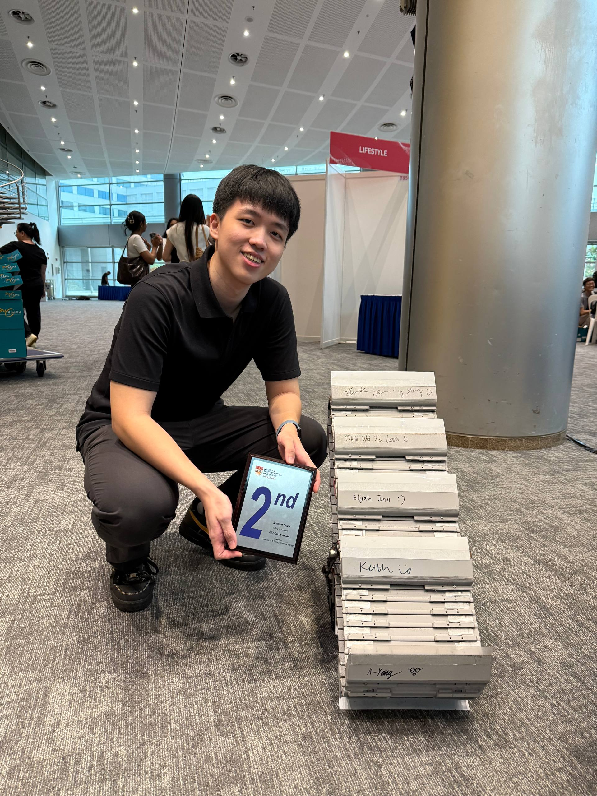
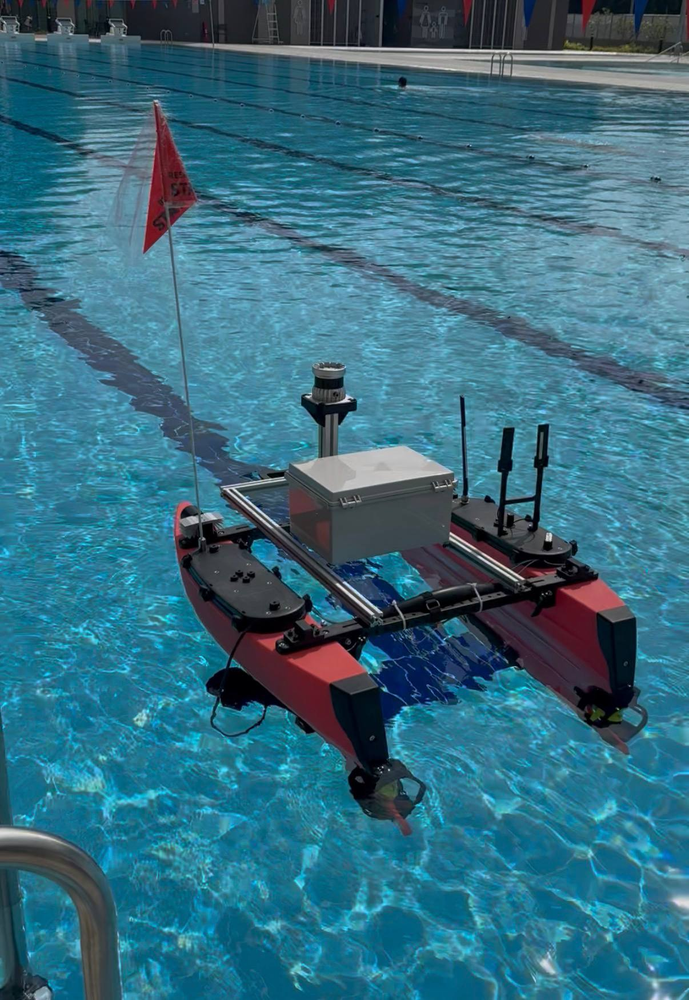
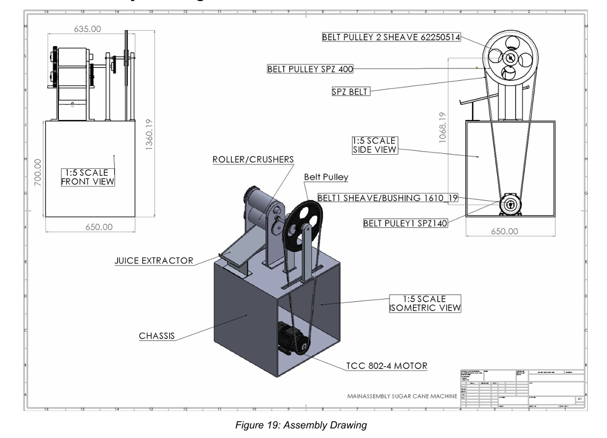

01 — Mechanical Engineering + Business, NTU Singapore
Frank
Chen Yi-Heng
I design, build, and break prototypes until they work. Mud-cleaning rover, autonomous boat parts, prosthetic socket test rigs — I bring cool ideas to life! Currently looking for internships globally.

02 — About
I'm a second-year Mechanical Engineering undergraduate at Nanyang Technological University, pursuing a second major in Business.
My love for engineering started in a bio-robot competition back in middle school. That year, my team won my city's championship. In preparation for the nationals, I found joy in innovation. I found pride in working with a team where we constantly push for better results. Despite losing in the nationals, I left the programme only inspired to build something fascinating one day again.
Fast forward six years, and I found myself pursuing a Mechanical Engineering & Business degree at NTU, where I strive to achieve good academic results and gain experience through leading projects and taking part in research.
Scroll down to see what I've built!
03 — Selected Work
Things I've built & researched

Archimedes Autonomous Vehicles
Developing the mechanical design of an autonomous drone-boat-submarine system for RobotX 2026.
View project →
GrubGrab
Led 9 engineering students to build a tracked mud-clearing rover for disaster relief. Placed 2nd in the Safety & Health category in NTU's EID competition.
View project →
URECA — Prosthetic Socket Testing
Built the test rig and ran compression tests to find out if 3D-printed prosthetic sockets can survive real loads.
View project →
Machine Element Design
Sized a sugar-cane juicer's entire drivetrain from scratch — motor to shafts to bearings — and defended every number in a 40-page report.
View project →04 — Contact
Let's talk.
Open to internships, project collaborations, or just a conversation about engineering. Reach me directly: